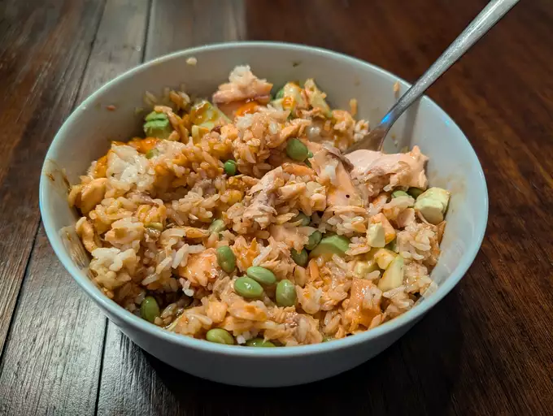

Salmon Teriyaki Bowl

Description
With only 5 ingredients you can make a very light, hight protien dish that can help fuel you for your day.
ingredients
- (4-6)ounces salmon filets
- 1/2 teaspoon kosher salt
- 1/2 cup teriyaki sauce
- 3 cups cooked jasmine rice
- Sriracha or any other hot sauce
- 1 avacado, peeled abd diced, or more to tast
Steps
- Preheat the oven to 450 degrees F (235 degrees C). Line a rimmed baking sheet with foil and lightly grease the pan.
- Season salmon with salt and pepper and spread 1 tablespoon teriyaki sauce over each fillet. Set salmon on the prepared baking sheet.
- Bake in the preheated oven until salmon flakes easily with a fork, 10 to 12 minutes, or to your preferred doneness.
- Meanwhile prepare rice and edamame according to package directions; keep warm.
- Divide rice among bowls and top with edamame. Flake 1 piece of salmon on top and add avocado.
- Drizzle 1 to 2 tablespoons of remaining teriyaki sauce over each bowl and drizzle with hot sauce.
Home